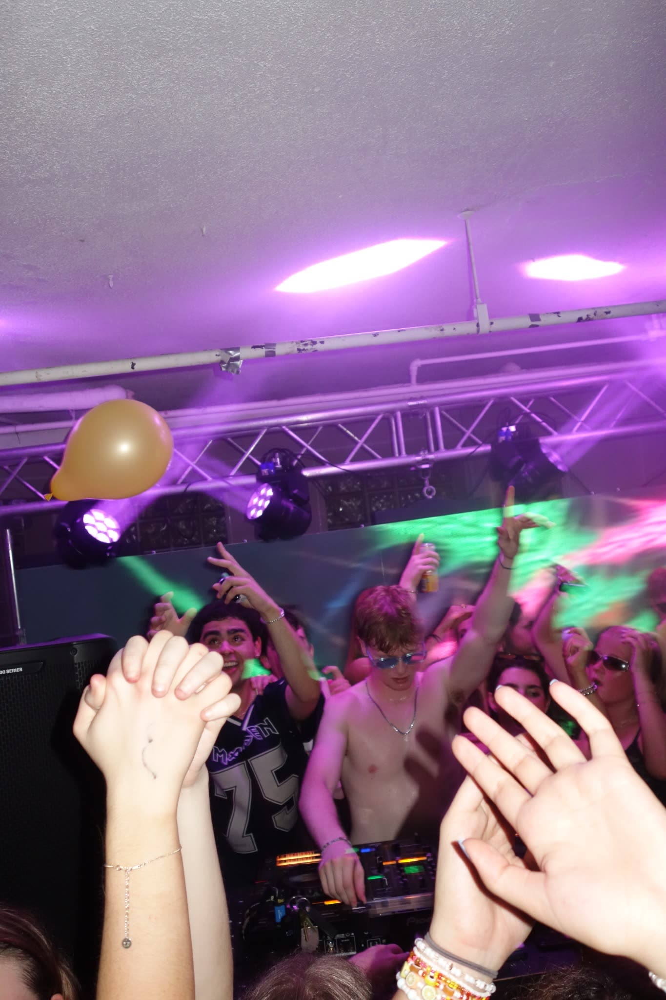
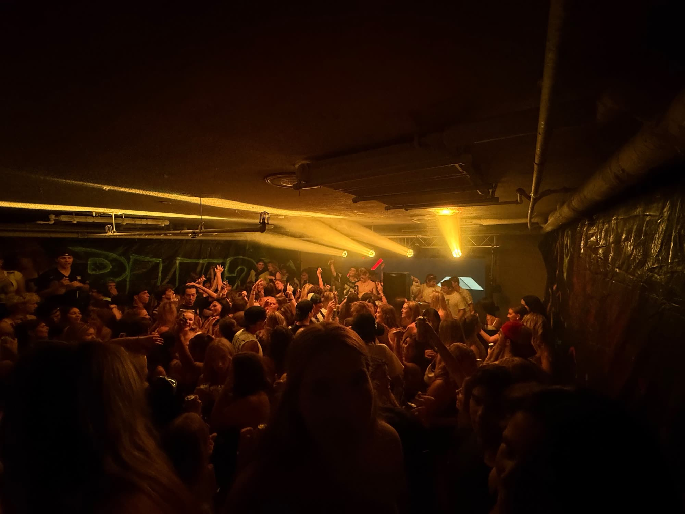
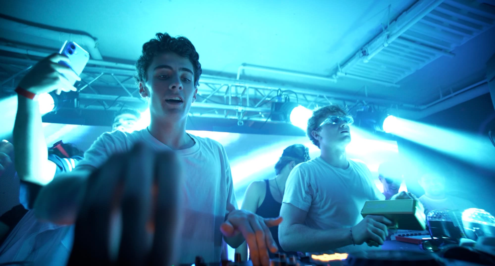
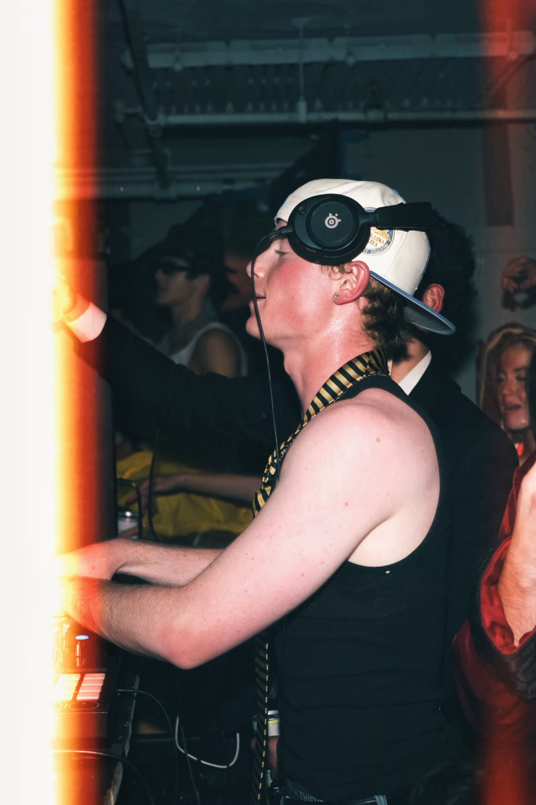

Boulder, Colorado / 2026
01 / LIVE
LIVE




02 / UPCOMING
BOULDER THEATER
SEP242026
ROSSI.
Support - Boulder Theater
Boulder, Colorado
OCT292026
CHASEWEST
Support - Boulder Theater
Boulder, Colorado
03 / ABOUT
JULES OSKAR
Jules Oskar is a Brooklyn-born house DJ and producer currently based in Boulder, Colorado, and relocating to Barcelona in January 2027.
His sets pull from groove-heavy house, old-school vocals, and UK club influence. In Boulder, he has built a strong live following through packed fraternity events and now moves into support slots at Boulder Theater for Rossi. and ChaseWest.
Before performing as Jules Oskar, he released Losing All Control on Broke Records under the name DUTCH.

RELEASED ONBROKE RECORDS
SUPPORTINGROSSI.
SUPPORTINGCHASEWEST
BASED 2027BARCELONA
04 / CONTACT
BOOKING
Based in Barcelona from January 2027. Available for bookings in Spain and across Europe.